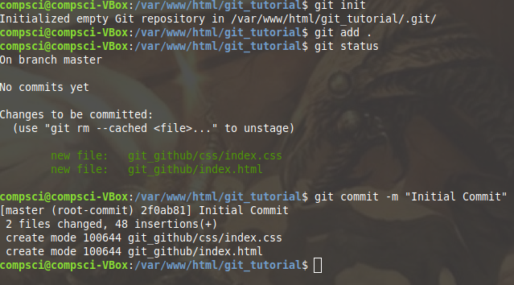
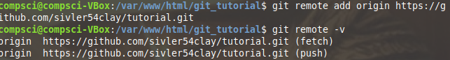
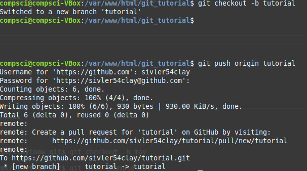
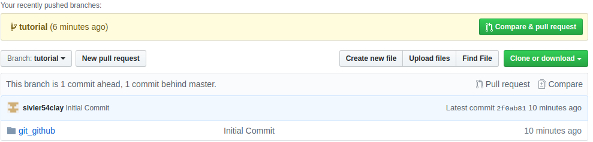

These pictures show the full process of committing files to GitHub, using Git.
This shows how to initialize git in a directory, staging all the files in the directory, and commit them to your local machine.
This shows adding a remote GitHub repo to push the files to, and checking the validity of the added repo.
This shows adding a new branch to the repo, named tutorial, then pushing the committed files to the repo.
This is the finished result, a backed up copy of a previous version of this site.
Using GitHub as a repository is only the most basic use of GitHub, and can be replaced by backing up with Google Drive or other similar cloud services.
The advanced uses of GitHub are keeping older versions to determine what changed between versions, and using branches to work with a team.